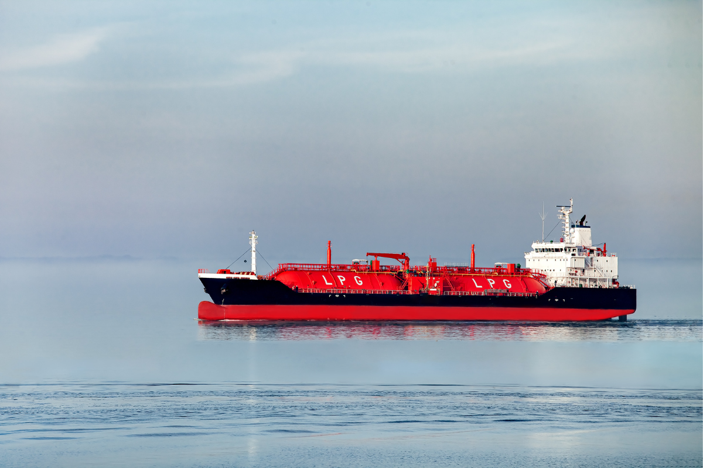
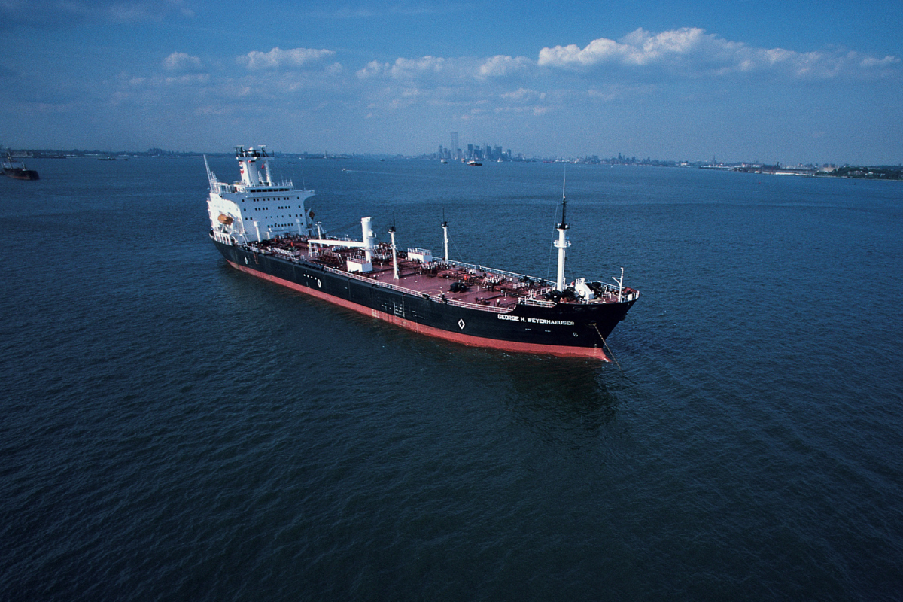

Energy Sector
Oil and gas companies efficiently transport crude oil, refined products, and LNG using sea routes, ensuring a cost-effective and reliable supply chain in the energy sector.
Sea Corazon Ship Management boasts a team of seasoned professionals with extensive expertise in all facets of maritime operations, ensuring a comprehensive and knowledgeable approach to ship technical management.
Find Out MoreTechnical, crew, OPEX and fleet services for vessels in commodity trade
Oil and gas companies efficiently transport crude oil, refined products, and LNG using sea routes, ensuring a cost-effective and reliable supply chain in the energy sector.
In the agriculture and food industry, sea transportation efficiently moves bulk cargo such as grains and edible oils, ensuring a cost-effective supply chain.
Manufacturing and mining industries efficiently transport bulk cargo like iron ore, coal, and minerals through sea routes, ensuring a cost-effective supply chain.
Chemical manufacturing companies efficiently transport liquid chemicals and hazardous materials by sea, ensuring compliance with safety regulations.
The construction industry efficiently transports bulk cargo like cement, sand, and aggregates through sea routes, ensuring a cost-effective and reliable supply chain.
The automotive industry efficiently uses sea transportation to ship vehicles and heavy machinery, ensuring cost-effectiveness and timely deliveries.
We have collected here answers to the most frequently asked questions from our many years of practice, as well as other useful information that will help you decide on ship management services or our other services for the transportation of liquid and bulk cargo
In the realm of ship technical management, our company offers a comprehensive suite of specialized services tailored to meet the diverse needs of maritime assets. At Sea Corazon Ship Management, our team oversees repairs, planned maintenance, and the integration of new technology to optimize the performance and longevity of your vessels. We conduct thorough inspections, utilizing advanced diagnostic tools, to identify potential issues and implement corrective measures promptly. Additionally, our ship technical management services encompass compliance management with international and local maritime regulations, ensuring the highest safety standards and environmental practices. From routine maintenance to intricate technical operations, we manage the whole of your fleet’s technical needs, keeping it reliable and efficient.
Our approach to preventive maintenance schedules within the realm of ship technical management is characterized by meticulous planning and proactive implementation. At Sea Corazon Ship Management, we initiate the process by conducting a thorough assessment of each vessel in your fleet, considering its unique technical specifications, operational history, and manufacturer’s recommendations. This information forms the basis for a tailored preventive maintenance plan that outlines routine inspections, component replacements, and necessary repairs. Using advanced diagnostic tools and predictive maintenance technologies, we address potential issues before they escalate, keeping your vessels in uninterrupted operation. This commitment to preventive maintenance is integral to our ship technical management philosophy, promoting the longevity, reliability, and optimal performance of your maritime assets.
In our ship technical management approach, stringent measures are in place to ensure unwavering compliance with both international and local maritime regulations. At Sea Corazon Ship Management, we prioritize staying at the forefront of evolving regulatory standards, employing a dedicated team with extensive expertise in maritime law and guidelines. Our ship technical management includes regular audits and assessments to check that every part of your fleet’s operations meets these requirements. From safety protocols to environmental practices, our strategy is meticulously crafted to navigate the complexities of global and regional maritime regulations effectively. This commitment to compliance not only safeguards your vessels but also contributes to the overall reputation and reliability of your maritime operations. With Sea Corazon Ship Management, ship technical management is synonymous with unwavering adherence to the highest international and local maritime standards.
Our ship technical management package encompasses a comprehensive array of services designed to optimize the performance and longevity of your maritime assets. At Sea Corazon Ship Management, our dedicated team handles everything from routine maintenance and planned repairs to intricate technical operations. This includes thorough inspections, advanced diagnostics, and new technology to improve the efficiency of your fleet. Additionally, we manage compliance with international and local maritime regulations, ensuring that safety standards are met, and environmental practices are adhered to. Our ship technical management services cover the full range of your fleet’s technical needs so that it operates reliably.
Ensuring compliance with international and local maritime regulations is a cornerstone of our ship technical management services. We implement a meticulous approach that involves staying abreast of the latest regulatory developments and standards. Our dedicated team, well-versed in maritime regulations, conducts regular audits and assessments to check that every aspect of your fleet’s technical management meets these requirements. From safety protocols to environmental standards, our ship technical management strategies are crafted to navigate the complexities of global and regional maritime regulations effectively. This commitment to compliance not only safeguards your vessels but also contributes to the overall reputation and reliability of your maritime operations. At Sea Corazon Ship Management, our ship technical management is synonymous with unwavering adherence to the highest international and local maritime standards.
In the realm of ship technical management, customization is our hallmark. We meticulously tailor our technical management solutions to accommodate the distinct needs and specifications of your fleet. Beginning with a comprehensive evaluation of your vessels, we delve into the intricacies of their technical requirements, operational history, and future aspirations. This collaborative process involves engaging with your team to gain insights that enable us to craft a bespoke ship technical management strategy. From personalized maintenance schedules to specialized repairs and new technology, our approach is tuned to optimize the performance, longevity, and overall efficiency of your maritime assets. At Sea Corazon Ship Management, we understand the unique diversity among fleets, and our commitment is unwavering—to deliver a tailored technical management approach that ensures the sustained success of your vessels.
Ship technical management — from routine maintenance to sophisticated technical operations, our dedicated team ensures optimal performance through thorough inspections and advanced diagnostic tools. Emphasizing preventive maintenance and compliance with maritime regulations, our approach prioritizes reliability, efficiency, and the sustained success of your maritime fleet.

International maritime transport, a time-honored method in global logistics, has become an integral aspect of international trade, showcasing the effectiveness of maritime transportation.
Read More
Sea Corazon Ship Management has the capability to arrange the transportation of liquid cargo to global destinations, ensuring the secure and reliable shipment of liquid bulk cargo on an international scale.
Read MoreBulk cargo transportation, a longstanding method in maritime logistics, has evolved into an essential component of international trade. It exemplifies the efficiency of maritime transportation.
Read More